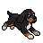
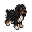

He follows your cursor
He trots over, drops his nose, and tracks it. Six times out of ten that turns into a stalk, a freeze, and a pounce.
Free · Open source · macOS
A hand-drawn dog who lives on your desktop. He walks on your windows, naps when you leave, and wants nothing.
No network.
No permissions.
No account.
No price.
He is a drawing on a window, and that is all he needs to be.

He runs his own life
Every few seconds he rolls the dice and picks something to do.

Or bring your own dog
334 sprites make a coat. Draw one, or hand three photos to the optional generator.
The tops of your windows are just more steps to him.
Move your pointer in here and he will come and sniff it.
Every few seconds of standing around, he rolls the dice and picks something to do. Nothing here is scripted, and none of it asks you first.
He trots over, drops his nose, and tracks it. Six times out of ten that turns into a stalk, a freeze, and a pounce.
Not the edge of the screen. Your actual windows. Move one and he rides it. Move it hard and he falls off.
Machine runs hot and he gets the zoomies. Battery drops and he lies down about it. He never tells you either way.

Two minutes without input and he curls up wherever he happens to be standing.
What he picks, and how often


A coat is 334 sprites across seventeen states and eight directions. Jumba is the one you get. If you want a different one there are two ways, and both are off until you turn them on.
From three photos
The optional Make Your Own Dog feature calls the Pixellab API to turn three photos into a coat. Skip it and the app makes no network calls at all. No key ships in the binary, so it stays inert until you supply one.
security add-generic-password \ -s ai.pixellab.api -a Jumbini -w <your-key>
Or draw one yourself
Drop a folder of sprites into the coats directory and it appears in the Coat menu next to Classic and Shaggy. Pick Classic to get Jumba back, in one click.
~/Library/Application Support/Jumbini/coats/
COATS.md has the format.
The short version is on the blue card at the top. This is the long one.
No network
The hand-drawn dog never phones home. Make Your Own Dog is the one exception, and it is opt-in.
No permissions
No Accessibility, no Screen Recording, no Full Disk Access, no Input Monitoring.
No account, no telemetry
Nothing to sign into, nothing measured, nothing sent anywhere.
No purchases
No cosmetic packs, no subscription, no ads. 327 tests and a notarized build.
macOS 14 (Sonoma) or newer, Apple Silicon. Signed and notarized, so it opens on first launch.
DownloadDownload the disk image
Grab Jumbini.dmg from the latest release.
Drag him to Applications
Open the disk image and drag Jumbini across.
Open it
That is the whole thing. No right-click trick, no trip through Privacy & Security.
git clone https://github.com/abjumb/jumbini.git cd jumbini ./Scripts/bundle.sh # -> build/Jumbini.app open build/Jumbini.app